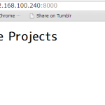
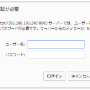
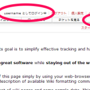
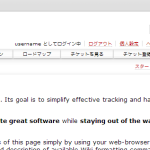
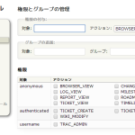
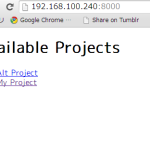
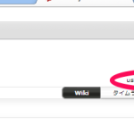

Pythonベースのプロジェクト管理ツール、tracのインストール
Pythonベースのプロジェクト管理ツールtracをインストールした経緯を示す。
プロジェうと管理ツールとしては、redmineもインストールしたのだが、それと比較したい。
だからひとまずインストールするだけ。
FreeBSD 10.0-RELEASEにtrac-1.0.1。
全体のながれ
- tracのインストール
- 環境作成
- 環境のテスト
- 認証用パスワードファイルの作成
- 起動設定
- 複数プロジェクト設定
インストール
tracはpkgにもあるので、特に障害もなくインストール完了。
/usr/local/lib/python2.7/site-packages/tracにドバっとファイルが作られる。
古い（といってもそこまで古くないが）ブログによると、日本語環境で使うためにいろいろと苦労が必要なようだが、現時点においてはpkg install trac一発で完了。
依存関係はこんな感じ。
$ sudo pkg info -d trac
trac-1.0.1_2:
silvercity-0.9.7
py27-pygments-1.6_2
py27-Genshi-0.7_1
py27-docutils-0.11
python27-2.7.6_4
python2-2_2
py27-subversion-1.8.8_2
py27-setuptools27-2.0.1
py27-pytz-2014.1.1,1
py27-Babel-1.3_1
py27-sqlite3-2.7.6_3
データベースはご覧の通りsqliteが使われる。もちろんMySQLなど他のソフトウェアも使える。
webサーバも不要。こちらもapacheなど他のソフトウェアを使える。
設定
大したことはない。
まず環境を作る。
ディレクトリを決めておいて、そこでtracコマンドを実行し、初期化する。
例えば/usr/local/wwwの下に、tracというディレクトリを作る。
そこでtrac initenvと叩く。
注意点は、ディレクトリの文字コード。ASCIIじゃないとダメ。
また、作成したあとには、ユーザ、グループ権限を変えること。
www:wwwで動かすならそのようにchownしておく。
以下は実行例。
データベースにsqliteを使うならリターンキーを連打するだけでよい。
（プロジェクト名はMy Projectになるけど。）
example01 /usr/local/www >trac-admin /usr/local/www/trac initenv Creating a new Trac environment at /usr/local/www/trac Trac will first ask a few questions about your environment in order to initialize and prepare the project database. Please enter the name of your project. This name will be used in page titles and descriptions. Project Name [My Project]> Please specify the connection string for the database to use. By default, a local SQLite database is created in the environment directory. It is also possible to use an already existing PostgreSQL database (check the Trac documentation for the exact connection string syntax). Database connection string [sqlite:db/trac.db]> Creating and Initializing Project Installing default wiki pages CamelCase imported from （略） Project environment for 'My Project' created. You may now configure the environment by editing the file: /usr/local/www/trac/conf/trac.ini If you'd like to take this new project environment for a test drive, try running the Trac standalone web server `tracd`: tracd --port 8000 /usr/local/www/trac Then point your browser to http://localhost:8000/trac. There you can also browse the documentation for your installed version of Trac, including information on further setup (such as deploying Trac to a real web server). The latest documentation can also always be found on the project website: http://trac.edgewall.org/ Congratulations! example01 /usr/local/www >
詳細な設定はtrac.iniでできるよ、とメッセージがあるが、そんなのは後回しにして、まずは起動確認。
試運転
初期設定完了時のメッセージにある通り、tracdとしてwebサーバを起動することができる。
–portにポート番号、それにディレクトリを引数に与える。
example01 /usr/local/www >tracd --port 8000 /usr/local/www/trac/ Server starting in PID 2351. Serving on 0.0.0.0:8000 view at http://127.0.0.1:8000/ Using HTTP/1.1 protocol version 192.168.100.106 - - [17/May/2014 00:35:57] "GET / HTTP/1.1" 200 - 192.168.100.106 - - [17/May/2014 00:35:58] "GET /favicon.ico HTTP/1.1" 404 - 192.168.100.106 - - [17/May/2014 00:35:58] "GET /favicon.ico HTTP/1.1" 404 - 192.168.100.106 - - [17/May/2014 00:36:00] "GET /trac HTTP/1.1" 200 - 192.168.100.106 - - [17/May/2014 00:36:00] "GET /trac/chrome/common/css/wiki.css HTTP/1.1" 200 - 1
この状態で、ブラウザから接続して、以下のような表示があれば成功。 
さっき作ったMy Projectが見えていますね。
ただ、この状態では何もできない。
メニューのログインをクリックしても、ページがない旨のエラーが表示されるはず。
まずは認証の準備をする必要がある。
ターミナルに戻ってCtrl+Cで抜けよう。
{kind=link}
{kind=link}
認証用のパスワードファイル作成
認証の準備すなわちパスワードファイルの作成である。
パスワードファイルだから、平文で書かれていてはまずい。
ではどうやって作るか。
apacheをインストールしていれば、htpasswdを使う。
apacheがなければ。
インストールドキュメントに書いてあるスクリプトを使う。
http://emelfm2.net/wiki/TracStandalone
ちょっと横道に逸れるが。
いずれにしても、このさきtracにユーザを追加する場合には、ここで作成したパスワードファイルへの登録で行う。
これを面倒と感じるかどうか。
さておき、以下を適当な名前で、たとえばtrac-digest.pyとして保存する。
from optparse import OptionParser
# The md5 module is deprecated in Python 2.5
try:
from hashlib import md5
except ImportError:
from md5 import md5
realm = 'trac'
# build the options
usage = "usage: %prog [options]"
parser = OptionParser(usage=usage)
parser.add_option("-u", "--username",action="store", dest="username", type = "string",
help="the username for whom to generate a password")
parser.add_option("-p", "--password",action="store", dest="password", type = "string",
help="the password to use")
parser.add_option("-r", "--realm",action="store", dest="realm", type = "string",
help="the realm in which to create the digest")
(options, args) = parser.parse_args()
# check options
if (options.username is None) or (options.password is None):
parser.error("You must supply both the username and password")
if (options.realm is not None):
realm = options.realm
# Generate the string to enter into the htdigest file
kd = lambda x: md5(':'.join(x)).hexdigest()
print ':'.join((options.username, realm, kd([options.username, realm, options.password])))
使い方は以下の通りで、python trac-digest.pyに続けて、-u ＜ユーザネーム＞ -p ＜パスワード＞とし、その出力をファイルに向ける。
example01 /usr/local/www > python trac-digest.py -u username -p password >> /tmp/digest.txt
つまりユーザusernameを、passwordというパスワードで作成している。
生成されたファイルの中身は以下の通り。
2カラムめはrealm。
username:trac:a053da77aad45fc9d4a506ef6fd
本格起動
今度はtracdにオプションを特盛で与える。
–authで先ほどのパスワードファイルを与える。
その際には、プロジェクトのベースディレクトリ、パスワードファイル、realmを指定する。
ベースディレクトリとは、もし環境を作ったディレクトリが/usr/local/www/tracならtracになる。
このベースディレクトリは、のちにwebサーバを動かしたとき、http://＜サーバアドレス＞/＜ベースディレクトリ＞というように使われる。
最終的に–authは、本記事の例でいえば、–auth=trac,/tmp/digest.txt,tracとなる。
さらに、-pで待ち受けポート、–user, –groupでtracdを動かす権限を、-dでdaemoniseを指定する。
以下のようになる。
# tracd --auth=trac,/tmp/digest.txt,trac -p 8000 --user=www --group=www /usr/local/www/trac/ -d
試運転の時とは違い、すぐにプロンプトが戻ってくる。
試しにsockstatを見てみると、以下の通り。
# sockstat -l4 USER COMMAND PID FD PROTO LOCAL ADDRESS FOREIGN ADDRESS www python2.7 6517 3 tcp4 192.168.100.240:8000 *:*
認証の確認
さきほどはクリックしてもページのなかった「ログイン」が、今度はIDとパスワードを訊いてくるようになっているはず。  
これでチケットの発行ができる。
{kind=link}
{kind=link}
管理者権限の作成
しかしユーザusernameは一般ユーザである。
彼に管理者権限を与えるには、以下のようにtracコマンドで操作を行う。
example01 /usr/local/www >trac-admin /usr/local/www/trac permission add username TRAC_ADMIN example01 /usr/local/www >
このあと、ユーザusernameには管理者メニューが現れる。 
{kind=link}
なお、管理者であれば、他ユーザの権限も操作できる。 
したがって、管理者権限を与えるのは最初の一人だけ、にすることもできる。
{kind=link}
注意点としては、各ユーザの権限はさきほど作成したパスワードファイルでは管理されていない、ということ。
繰り返すが、ユーザの登録はパスワードファイルへの登録で、（少なくとも初回の）権限変更は上記コマンドで、という仕組みをどう感じるか。
まあちょっと面倒くさいかもしれませんな。
システム起動時設定（シングル環境モード）
以上でtracをとりあえず起動する設定は済んだ。
あとはシステム起動時にtracが起動するよう、/etc/rc.confに設定を加える。
/usr/local/etc/rc.d/trac内のコメントに沿ってrc.confに追加する。
以下は例。## trac
tracd_enable="YES" tracd_listen="192.168.100.240" tracd_port="8000" tracd_envdir="/usr/local/www/" tracd_env="trac" tracd_args="--user=www --group=www --auth=trac,/tmp/digest.txt,trac"
tracd_envdirとtracd_envに注意。
こういう書き方をしてtracに接続するといきなりMy Projectに移動する。
プロジェクトが一つであれば何の問題もないが、複数プロジェクトを抱えたい場合には困る。
複数プロジェクトの運営
複数プロジェクトを登録したいのであれば、必要なぶんだけディレクトリを作り、そこでtrac-admin initenvすればよい。
例えば/usr/local/www/tracsなんてディレクトリを作り、projecttemp, projectaltというディレクトリをさらに作る。
それぞれにinit-envで環境を作る。
このとき、/etc/rc.confはこのようにする。
tracd_envに/usr/local/www/tracsを指定し、tracd_envはコメントアウト。
–authで指定するベースディレクトリにアスタリスクを与えれば、パスワードファイルを複数のプロジェクトで共有できる。
## trac tracd_enable="YES" tracd_listen="192.168.100.240" tracd_port="8000" tracd_envdir="/usr/local/www/tracs" #tracd_env="" tracd_args="--user=www --group=www --auth=*,/tmp/digest.txt,trac"
こんな感じ。  
{kind=link}
{kind=link}
以上